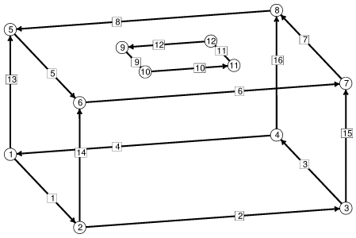

旋转的影响通过散度定理（Divergence Theorem）的积分形式纳入能量计算中：
///
E = - ||| (1/2) p r^2 w^2 dV
///B
//
= - || (1/2) p w^2 (x^2+y^2) z k·dA
//bdry B
其中 B 是液体区域，r 是到旋转轴的径向距离，p 是流体密度，w 是角速度。
注意能量为负值，因为旋转使液体倾向于向外移动。
这需要由将液体保持在杆上的表面张力来平衡。
如果 p 为负值，则相当于旋转液体中的一个环形气泡（toroidal bubble），
高转速将稳定环面形状。
旋转能量在数据文件中使用命名量语法（named quantity syntax）定义（见下文）。
"centrip" 是用户为该量选择的名称，"energy" 声明该量是总能量的一部分，
"global_method" 表示以下方法将应用于整个表面，
"facet_vector_integral" 是预定义的方法名称，用于在面上积分矢量场，
而 "vector_integrand" 引入矢量场的分量。
杆表面定义为约束 1，方程为 x^2 + y^2 = R^2，其中 R 是杆的半径。 液体与杆之间的接触能通过液体表面与杆相交的边上的边积分来处理：
// / /
E = || -T cos(a) dA = -T cos(a) | z ds = T cos(a) | (z/R)(yi - xj)·ds
//S /bdry S / bdry S
这里 S 是杆表面（未作为 bdry B 中的面包含在内），T 是自由表面的表面张力，a 是内接触角。
推导此积分的一个更直观的方法是使用柱坐标系，将杆上接触线与 z = 0 之间的替换表面想象为被分割成许多高为 z、宽为 R dtheta 的竖直薄条带。
每个条带的能量为 -T cos(a) z R dtheta。转换回笛卡尔坐标系，dtheta = (x dy - y dx)/(x^2 + y^2)，因此
// //
E = -T cos(a) || z R (x dy - y dx)/R^2 = -T cos(a) || (z/R)(x dy - y dx)
// //
约束 2 是一个水平对称面。 通过对称性假设，我们只需完成一半的工作量。
约束 3 是一个单侧约束，用于防止液体侵入杆内。 仅在杆上设置约束 1 的边界边是不够的，特别是当接触角接近 180 度且液体体积较大时。 约束 3 可以施加在任何可能试图侵入杆内部的顶点、边或面上。 但需要注意的是，如果只在部分顶点和边上施加约束 3， 具有不同约束的面之间的等角化（equiangulation）将会被阻止。
约束 4 是一种使杆表面上的顶点均匀分布的装置。
弯曲约束上的边往往变得非常不均匀，
因为绕过曲线的长边可以节省能量。
因此需要一种方法使顶点沿圆周方向均匀分布，同时允许其在垂直方向自由移动。
一种方法是使用另一个约束，其等值面（level sets）为通过 z 轴的等角度间隔的竖直平面。
约束 4 使用实数取模函数（modulus function）与反正切函数（arctangent）来创建周期性约束。
每次细分时，参数需要减半以将周期减半。
这通过在数据文件末尾重新定义 "r" 细分命令来实现。
注意自动重算（autorecalc）被临时关闭，以防止在约束处于无效状态时将顶点投影到约束上。
另请注意 pi/6 的偏移量是为了避免取模函数的不连续性。
pi/6 的选择经过巧妙设计，使得所有细分也能避开不连续点。
检测稳定性的一种方法是对环面施加扰动，观察其是否能演化回平衡状态。 数据文件定义了一个命令：
perturb := set vertex y y+.01 where not on_constraint 1这将每个顶点的 y 坐标设置为 y+.01。 此命令在数据文件末尾的 "
read" 部分定义，
您可以在该部分放置数据文件加载后希望立即执行的任意命令。
为了检测微小扰动并获得扰动大小的数值，
在命名量 "ymoment" 中计算液体的 y 方向矩（y moment）。
如 info_only 关键字所示，它不是能量的一部分。
您可以使用 `v' 命令查看其值。
检查稳定性的更好方法是检查海森矩阵（Hessian matrix）的特征值。
首先，正常演化到接近平衡状态。
然后使用 hessian 命令数次以精确收敛到平衡状态。
接着使用命令 "ritz(0,5)" 显示海森矩阵中最接近 0 的 5 个特征值。
通过逐步提高转速并追踪最小特征值，可以检测到不稳定性的出现——
即最小特征值变为 0 的时刻。
请注意，数据文件中开启了 hessian_normal，
这样海森矩阵只考虑法向于表面的扰动。
|
 |
初始环形液滴骨架，顶点和边已编号。 利用对称性，仅表示上半部分。 |
// ringblob.fe
// Toroidal liquid ring on a rotating rod in weightlessness.
// Half of full torus
// Using second periodic constraint surface intersecting rod to
// confine vertices on rod to vertical motion.
// Important note to user: Use only the 'rr' command defined at
// the end of this file to do refinement. This is due to the
// nature of constraint 4 below.
// This permits drawing both halves of the ring
view_transforms 1
1 0 0 0
0 1 0 0
0 0 -1 0
0 0 0 1
// Basic parameters. These may be adjusted at runtime with the
// 'A' command. Only spin is being adjusted in these experiments.
parameter rodr = 1 // rod radius
parameter spin = 0.0 // angular velocity
parameter angle = 30 // internal contact angle with rod
parameter tens = 1 // surface tension of free surface
#define rode (-tens*cos(angle*pi/180)) // liquid-rod contact energy
parameter dens = 1 // density of liquid, negative for bubble
// spin centripetal energy
quantity centrip energy global_method facet_vector_integral
vector_integrand:
q1: 0
q2: 0
q3: -0.5*dens*spin*spin*(x^2+y^2)*z
// y moment, for detecting instability
quantity ymoment info_only global_method facet_vector_integral
vector_integrand:
q1: 0
q2: 0
q3: y*z
// Constraint for vertices and edges confined to rod surface,
// with integral for blob area on rod
constraint 1
formula: x^2 + y^2 = rodr^2
energy:
e1: -rode*z*y/rodr
e2: rode*z*x/rodr
e3: 0
// Horizontal symmetry plane
constraint 2
formula: z = 0
// Rod surface as one-sided constraint, to keep stuff from caving in
// Can be added to vertices, edges, facets that try to cave in
constraint 3 nonnegative
formula: x^2 + y^2 = rodr^2
// Constraint to force vertices on rod to move only vertically.
// Expressed in periodic form, so one constraint fits arbitrarily
// many vertices. Note offset to pi/6 to avoid difficulties with
// modulus discontinuity at 0.
parameter pp = pi/2 /* to be halved each refinement */
parameter qq = pi/6 /* to be halved each refinement */
constraint 4
formula: (atan2(y,x)+pi/6) % pp = qq
//initial dimensions
#define ht 2
#define wd 3
vertices
1 0 -wd 0 constraints 2 // equatorial vertices
2 wd 0 0 constraints 2
3 0 wd 0 constraints 2
4 -wd 0 0 constraint 2
5 0 -wd ht // upper outer corners
6 wd 0 ht
7 0 wd ht
8 -wd 0 ht
9 0 -rodr ht constraints 1,4 // vertices on rod
10 rodr 0 ht constraints 1,4
11 0 rodr ht constraints 1,4
12 -rodr 0 ht constraints 1,4
edges
1 1 2 constraint 2 // equatorial edges
2 2 3 constraint 2
3 3 4 constraint 2
4 4 1 constraint 2
5 5 6 // upper outer edges
6 6 7
7 7 8
8 8 5
9 9 10 constraint 1,4 // edges on rod
10 10 11 constraint 1,4
11 11 12 constraint 1,4
12 12 9 constraint 1,4
13 1 5 // vertical outer edges
14 2 6
15 3 7
16 4 8
17 5 9 // cutting up top face
18 6 10
19 7 11
20 8 12
faces /* given by oriented edge loop */
1 1 14 -5 -13 tension tens // side faces
2 2 15 -6 -14 tension tens // Remember you can't change facet tension
3 3 16 -7 -15 tension tens // dynamically just by changing tens; you have
4 4 13 -8 -16 tension tens // to do "tens := 2; set facet tension tens"
5 5 18 -9 -17 tension tens // top faces
6 6 19 -10 -18 tension tens
7 7 20 -11 -19 tension tens
8 8 17 -12 -20 tension tens
bodies /* one body, defined by its oriented faces */
1 1 2 3 4 5 6 7 8 volume 25.28
read // some initializations
transforms off // just show fundamental region to start with
// special refinement command redefinition
r :::= { autorecalc off; pp := pp/2; qq := qq % pp; 'r'; autorecalc on; }
// a slight perturbation, to check stability
perturb := set vertex y y+.01 where not on_constraint 1
hessian_normal // to make Hessian well-behaved
linear_metric // to normalize eigenvalues